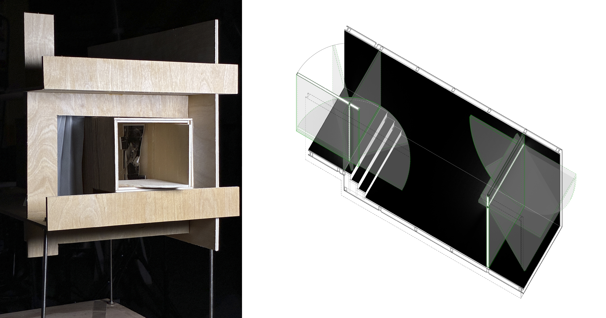
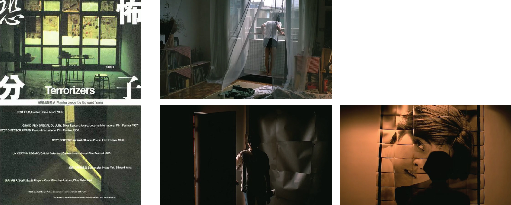
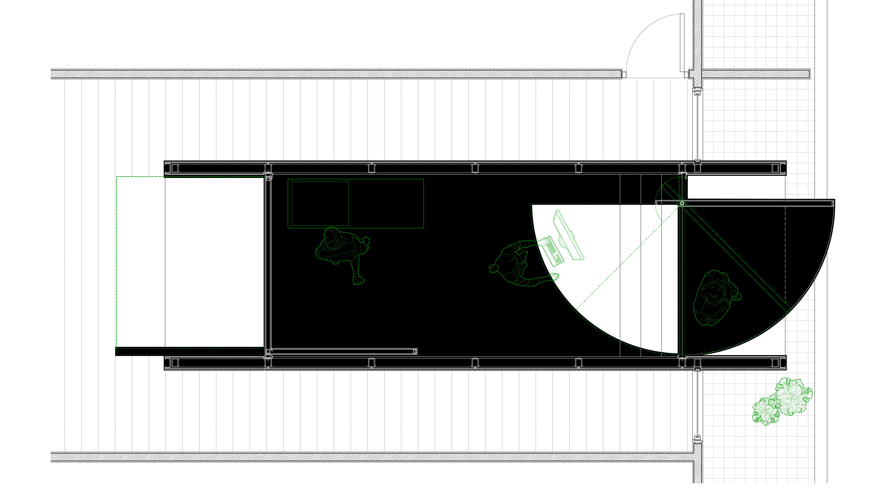
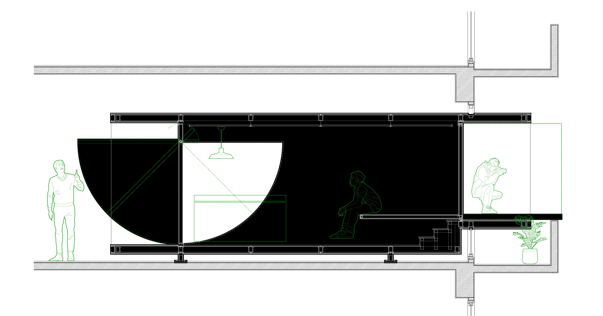

From Mask to Exposure

A Darkroom inside a Room
This project explores the dialectic of light and enclosure through a "box" situated between interior and exterior. Inspired by the duality of a mask—concealing while defining a face—the architecture functions as a mechanical apparatus.
It begins as a sealed darkroom. Through the unfolding of its skin, the darkroom breathes, transforming from a hermetic void into a theater of exposure. The opening of the pivot door is not merely a functional act but a spatial event: the black interior expands to claim the exterior, while natural light penetrates to rewrite the room's atmosphere.

Cinematic Reference: The Terrorizers (1986)
Inspired by Edward Yang's depiction of Taipei's urban solitude, specifically the photographer's darkroom. The design translates the film's atmospheric tension—the drifting photographs, the sudden intrusion of light upon curtain opening, and the shifting boundaries between observer and observed—into an architectural mechanism.



Technical Detail: The Pivot Mechanism
Detail section of the pivot door.